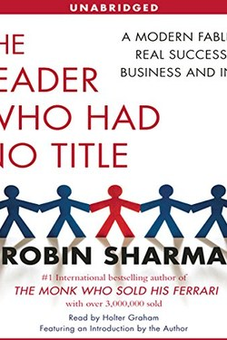

Library › Business & Startups
The Leader Who Had No Title — Summary & Key Lessons

Leadership is not a position — it is a behaviour. The fable that teaches you to lead from anywhere.
📖 OPEN THE FULL INTERACTIVE BREAKDOWN →🌐 Read it in Hindi, Hinglish, Gujarati, Tamil & 22 more languages — free, with audio.
💡 The Big Idea
Sharma's four principles — you don't need a title to lead, turbulent times build great leaders, the deeper your relationships the stronger your leadership, and leadership is a craft of daily habits — are delivered through a fable about a hotel. The message: titles are given, leadership is taken. The janitor who owns his work like a CEO is more of a leader than the CEO who does not.
🧠 The 9 Key Lessons
Lesson 1: Title vs. Leadership
Part 1: The Rule
The first, cold truth: a title lets you command; only competence and example let you lead. The most respected person in most rooms has no title at all — the expert, the calm one, the one who makes others better. Sharma's test: if you were stripped of your title, would people still follow you? That answer is your real position.
📖 Example: A senior engineer with no management title becomes the person everyone consults — she leads the org without a badge. Read the full example →
⚡ Do this: Do one act of leadership today that requires no permission and no title.
Lesson 2: Turbulent Times Build the Strong
Part 2: The Storm
Crisis is the gym of leadership: easier conditions strengthen the average, but hard conditions reveal the great. Sharma's point: do not wait for calm to build skill. When the whole system is shaken, those who trained before the storm become the emergency that everyone else needs.
📖 Example: In the 2008 crash, banks that had kept disciplined capital earlier became the survivors and acquirers. Read the full example →
⚡ Do this: When things go wrong this week, name one skill the crisis is asking you to build — and start it.
Lesson 3: Relationships Are the Infrastructure
Part 3: The Human Side
Business runs on relationships the way a railway runs on rails. Sharma's rule: the deeper your connection with the people around you, the more you can achieve together. Small courtesies, genuine interest, remembering names and stories — these are not soft skills; they are the operating system of influence.
📖 Example: A manager who knows the team's kids' names gets loyalty a bonus plan cannot buy. Read the full example →
⚡ Do this: One genuine, curious conversation today with someone you usually treat as background.
Lesson 4: Work Hard, Be Nice, Train Daily
Part 4: The Craft
Leadership is a daily craft like any other: practice, feedback, refinement. Sharma prescribes 'the 5 AM club' habits and the discipline of giving your best to even the smallest task. Excellence is not an event; it is a repetition. The last principle — act like a leader even when you don't feel like it — is the whole game.
📖 Example: The barista who treats every coffee as her signature work becomes the manager of the whole cafés chain within years. Read the full example →
⚡ Do this: Identify your highest-leverage 30 minutes and give it the focus you give your most important meeting.
Lesson 5: Serve First, Lead Second
Part 5: The Servant
The book's final and deepest move: leadership is service. The leader's job is to make the people around them more effective, more confident and more celebrated. When you take care of others' success, your own success is taken care of as a by-product. This is not altruism; it is the most practical strategy there is.
📖 Example: A coach who makes players better produces teams that win — the leader who serves wins more than the star. Read the full example →
⚡ Do this: Today, make someone else's win happen, and let them take the credit.
Lesson 6: The Five Levels of the No-Title Leader (The 4.8 Rule)
Part 1: The Inner Game
Sharma's core map: leadership without title runs on five levels — self-mastery, influence, achievement, coaching, and legacy — each built on the one before. The formula he quotes for self-mastery is hard and precise: 4.8 — a decade of daily, deliberate practice before mastery. Nobody can skip levels; shortcuts are for those who want the title, not the leadership.
📖 Example: The '4.8 rule' from his mentor: roughly 4,800 hours of focused practice across ten years to reach mastery in any domain — no talent bypasses it. Read the full example →
⚡ Do this: Pick your level today: identify which of the five you are currently practising, then add ONE daily practice hour that builds the next.
Lesson 7: The Obstacle of Fear, Faced Daily
Part 1: The Inner Game (Fear)
Sharma calls fear the tax on ambition: every no-title leader pays it, and the difference between people is not the absence of fear but the daily decision to act inside it. His technique is the 'five-second rule' version for courage — when the voice of hesitation rises, you have a small window to move before the mind justifies retreat.
📖 Example: The salesperson who makes the call in the first five seconds of courage instead of the fiftieth minute of preparation builds both results and a braver self. Read the full example →
⚡ Do this: Identify your avoid-truth: the action you keep postponing. Take exactly one small step within five seconds of reading this. Not later — now.
Lesson 8: The Human 3.0 Upgrade
Part 2: The Mastery of Relationships
The book's relationship teaching is practical: upgrade how you treat people — listen to understand, not to reply; give recognition in public, correction in private; and invest in 'relationships as infrastructure' before you need them. The no-title leader gains followers by making people feel seen, because influence is a deposit account: you can only withdraw what you have deposited.
📖 Example: A manager who remembers a junior's career question and follows up a month later has built more loyalty than a bonus can buy. Read the full example →
⚡ Do this: Today: give one piece of recognition, publicly, for work nobody else noticed. Then note what happens to that person's output.
Lesson 9: The Ownership Test: Act Like the Owner of the Whole Game
Part 3: The Mastery of Peak Performance
Sharma's sharpest test for no-title leadership: how would you act if you owned the whole place? The person who sweeps the floor after the meeting because it's his floor, who answers the difficult customer because it's his reputation, who fixes the broken process because it's his system — that person leads without a title and is irreplaceable. Ownership is not a position; it is a relationship with the work.
📖 Example: Two employees see a problem on a Saturday: one thinks 'not my shift', the other fixes it because it is his company in every way that matters. Within a year, only one is running the team. Read the full example →
⚡ Do this: Today, take one problem you 'don't own' and act as if the entire outcome were yours. Ownership is a decision before it is a role.
✅ 5-Step Action Plan
- Do one title-free leadership act daily.
- Treat this week's turbulence as training, and name one skill to build.
- Have one genuinely curious conversation with a 'background' person.
- Give 30 minutes of full focus to your highest-leverage task.
- Make one other person's win happen — with no credit to you.
⚠️ When This Doesn't Work
The fable format is motivational, not research; 'lead from anywhere' ignores real differences in authority and accountability. The behaviours are true and useful — but power dynamics in real organisations are not as neat as the book suggests.
💀 The Graveyard Proves It
🪄 General Magic — The iPhone, Built 15 Years Too Early by the Wrong Decade. Burn: $90M+; the future, mistimed Read the full case study →
💬 Best Quotes from The Leader Who Had No Title
- “Leadership is not a position or a title. It is an action and an example.”
- “The greatest leaders are the greatest learners.”
- “Criticism is information. Great leaders use it to get better.”
Interactive version: mark lessons as read, listen in your language, share quote cards.